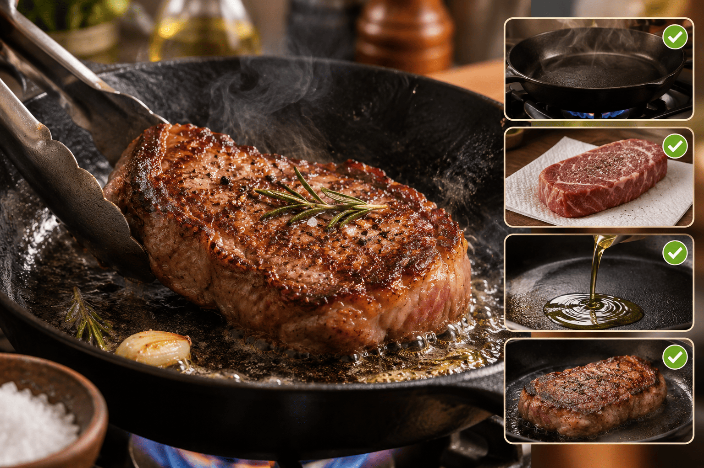
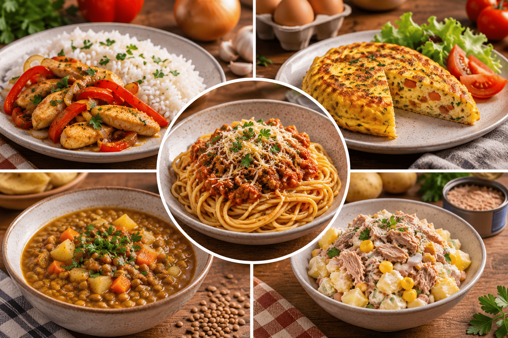

Receta de la semana
Pasta cremosa con ajo, champiñones y parmesano.
Estudiante de gastronomía aprendiendo una receta a la vez. Técnicas, experimentos y retos para cocinar mejor sin complicarse.
¡Vamos a cocinar algo!
Pasta cremosa con ajo, champiñones y parmesano.

Cómo conseguir un buen sellado en una sartén sin cocer la carne al vapor.

Preparar cinco platos diferentes con un presupuesto limitado.

Primera receta conseguida correctamente después de varios intentos.